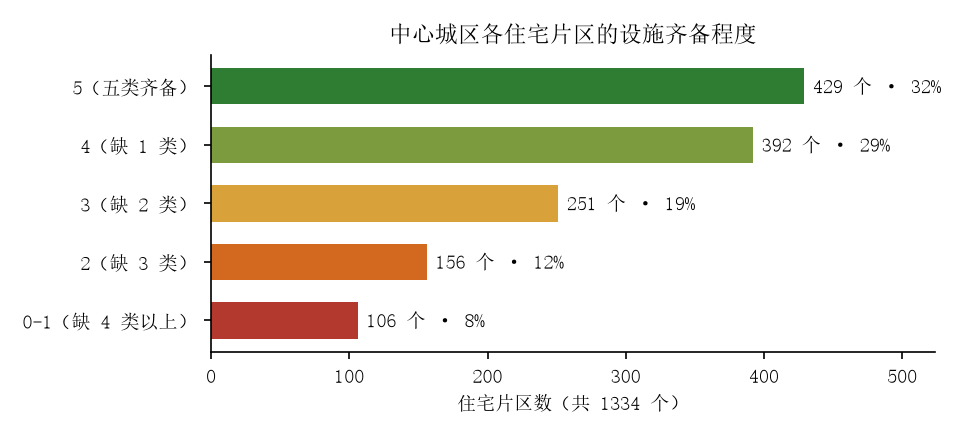
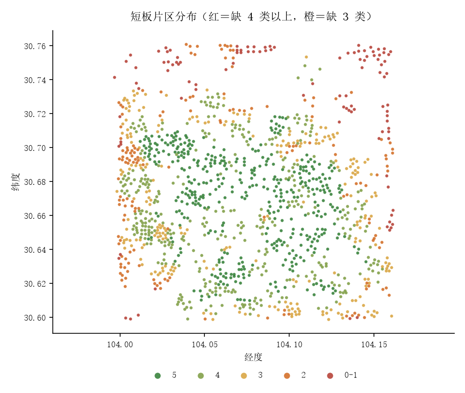

15 分钟生活圈 · 客户视角样例
成都中心城区 · 1 334 个住宅片区 · 五类日常设施 · 直线 1 000 m 口径 · 数据时点 2026-11（OpenStreetMap）
一句话结论：该片区五类设施齐备的住宅片区只有
32%，20% 的片区缺 3 类以上；最短的两块板是教育（可达率 53%）
和医疗（57%），公园已经达到 93%，不是瓶颈。
若要花最少的钱提升最多片区，应优先补「只差一类」的那批（见第四节）。
1334参与评估的住宅片区
32%五类齐备（完备度 5）
53%教育可达率（最低一类）
26493 ㎡片区面积中位数
一、这地方整体什么水平

按完备度分档统计。绿＝五类齐备，红＝缺 4 类以上；总数与占比见右侧标注。
二、五类设施各是什么状况
| 设施类别 | 15 分钟内可达率 | 判断 |
|---|
| 医疗 | 57% | 主要短板 |
| 教育 | 53% | 主要短板 |
| 购物 | 71% | 已达标为主 |
| 公园 | 93% | 已达标为主 |
| 地铁 | 88% | 已达标为主 |
判断口径：可达率 ≥ 60% 视为「已达标为主」，低于此则列为主要短板。未达标单元到最近设施的中位距离：医疗 还差 568 m；教育 还差 566 m；购物 还差 551 m；公园 还差 238 m；地铁 还差 586 m
三、短板集中在哪里

每个点是一个住宅片区，颜色为完备度档位（5＝五类齐备，4＝缺 1 类，3＝缺 2 类，2＝缺 3 类，0-1＝缺 4 类以上）。红点群就是需要优先布点的区域。
四、先从哪儿下手（只差一点就能补齐的 10 个片区）
| 片区 | 完备度 | 最难达标类别 | 距 1 000 m 还差 |
|---|
| 观南上域.瑞苑 | 4/5 | 医疗 | 1 m |
| 比华利国际城2期 | 4/5 | 医疗 | 3 m |
| 川大花园(南园) | 4/5 | 教育 | 4 m |
| 菽香里社区 | 4/5 | 购物 | 5 m |
| 舜苑 | 4/5 | 购物 | 5 m |
| 金扉银苑 | 4/5 | 教育 | 5 m |
| 书香门第 | 4/5 | 教育 | 8 m |
| 菽香苑 | 4/5 | 购物 | 11 m |
| 关家公寓 | 4/5 | 购物 | 11 m |
| 比华利国际城3期 | 4/5 | 医疗 | 12 m |
五、两处具体地方，长什么样
给客户讲方案时，抽象数字要能落到一个具体片区上。下面取仓里两个真实单元：一个已齐备、一个只差一类。
已达标的片区（可作对照基准）
住宅片区002 · 面积 296118 ㎡ · 完备度 5/5
| 医疗 | 747 m | 15 分钟内 |
| 教育 | 547 m | 15 分钟内 |
| 购物 | 304 m | 15 分钟内 |
| 公园 | 408 m | 15 分钟内 |
| 地铁 | 618 m | 15 分钟内 |
只差一类的片区（最值得优先补）
观南上域.瑞苑 · 面积 13678 ㎡ · 完备度 4/5
| 医疗 | 1001 m | 超出 · 差 1 m |
| 教育 | 493 m | 15 分钟内 |
| 购物 | 517 m | 15 分钟内 |
| 公园 | 588 m | 15 分钟内 |
| 地铁 | 827 m | 15 分钟内 |
六、口径与免责
① 距离为直线距离（UTM 48N 下计算），不是步行路网距离；跨河、跨铁路的实际步行时间会更长。
② 设施判定只看「最近设施是否在 1 000 m 内」，与设施容量、班次、开放时间无关。
③ 数据来自 OpenStreetMap（ODbL），2026-11 抓取，新开/关闭的设施未反映。
④ 底图与行政界线仅作空间参照，非法定界线。
⑤ 本页数字由 `make_client_report.py` 从 `life_circle_scores.csv` 现算，未手工改写。
生成：`python make_client_report.py` · 数据：`life_circle_scores.csv`（1 334 行）